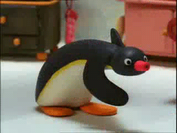
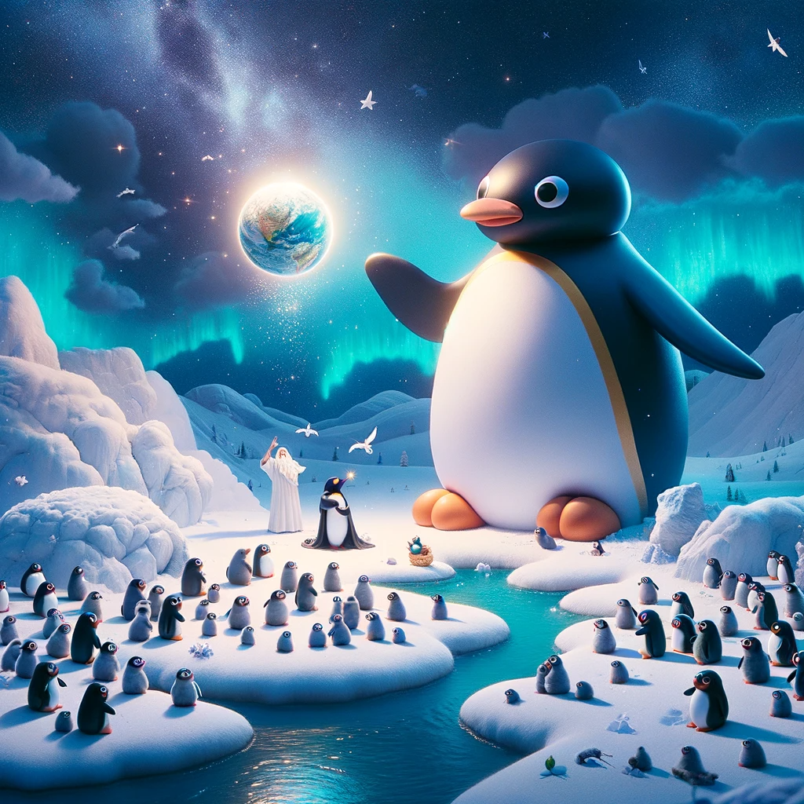

|  |
"NOOT NOOT"初めに神は天と地とを創造された。地は形もなく、空虚であり、闇が深淵の面にあり、神の霊が水の面を動いていた。 |
|---|---|
|  |
In the beginning, Pingu, the great and playful deity of the icy realms, looked upon the vast expanse of white and decided to create a world filled with joy and wonder. And Pingu said, "Let there be light," and there was light. Pingu saw that the light was good, and Pingu separated the light from the darkness. Pingu called the light 'Day' and the darkness 'Night.' And there was evening, and there was morning—the first day. Then Pingu spoke again, "Let there be a firmament in the midst of the waters, and let it divide the waters from the waters." And Pingu made the firmament and divided the waters which were under the firmament from the waters which were above the firmament; and it was so. Pingu called the firmament 'Heaven.' And there was evening, and there was morning—the second day. Pingu then commanded, "Let the waters under the heavens be gathered together into one place, and let the dry land appear." And it was so. Pingu called the dry land 'Earth,' and the gathering of the waters He called 'Seas.' And Pingu saw that it was good. On the earth, Pingu created hills and valleys, glaciers and icebergs, all shimmering under the sun. Upon the land, Pingu brought forth grass, and herb yielding seed after his kind, and the tree yielding fruit, whose seed was in itself, after his kind. And Pingu saw that it was good. And there was evening, and there was morning—the third day. Then Pingu said, "Let there be lights in the firmament of the heaven to divide the day from the night; and let them be for signs, and for seasons, and for days, and years." And Pingu made two great lights; the greater light to rule the day, and the lesser light to rule the night. He made the stars also. Pingu set them in the firmament of the heaven to give light upon the earth, And to rule over the day and over the night, and to divide the light from the darkness. And Pingu saw that it was good. And there was evening and there was morning—the fourth day. On the fifth day, Pingu filled the seas with fish and other creatures that move in the waters, and the skies with birds of every feather. And Pingu saw that it was good. And Pingu said, "Let the earth bring forth living creatures according to their kinds—livestock, creeping things, and beasts of the earth according to their kinds." And it was so. And Pingu saw that it was good. Then Pingu, in a moment of playful wisdom, created penguins in his own image; to slide on the ice, to swim in the seas, and to fill the world with joy and laughter. Pingu blessed them, saying, "Be fruitful and multiply, and fill the waters in the seas, and let birds multiply on the earth." And there was evening and there was morning—the sixth day. Thus the heavens and the earth were finished, and all the host of them. And on the seventh day, Pingu ended his work which he had made; and he rested on the seventh day from all his work which he had made. Pingu blessed the seventh day and sanctified it because in it he had rested from all his work which Pingu created and made. This is the story of the heavens and the earth when they were created, in the time when Pingu, the playful deity, made the earth and the heavens, and every field before it was in the earth, and every herb of the field before it grew. For Pingu had not caused it to rain upon the earth, and there was not a man to till the ground, but a mist went up from the earth and watered the whole face of the ground. And thus began the dance of life and joy in the world of Pingu. |